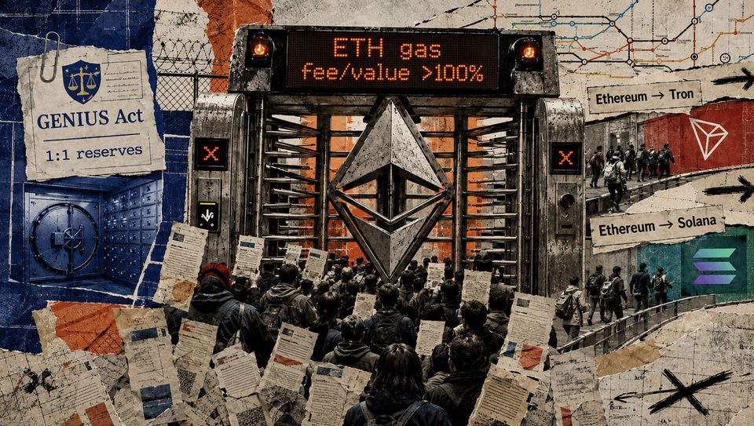
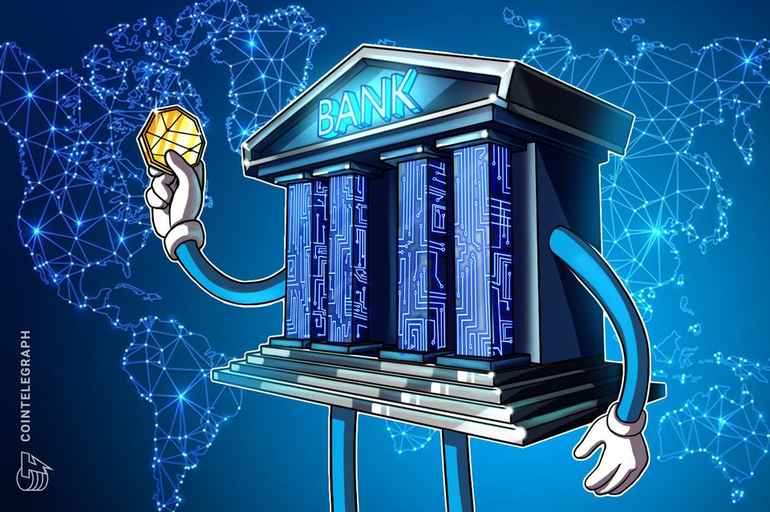
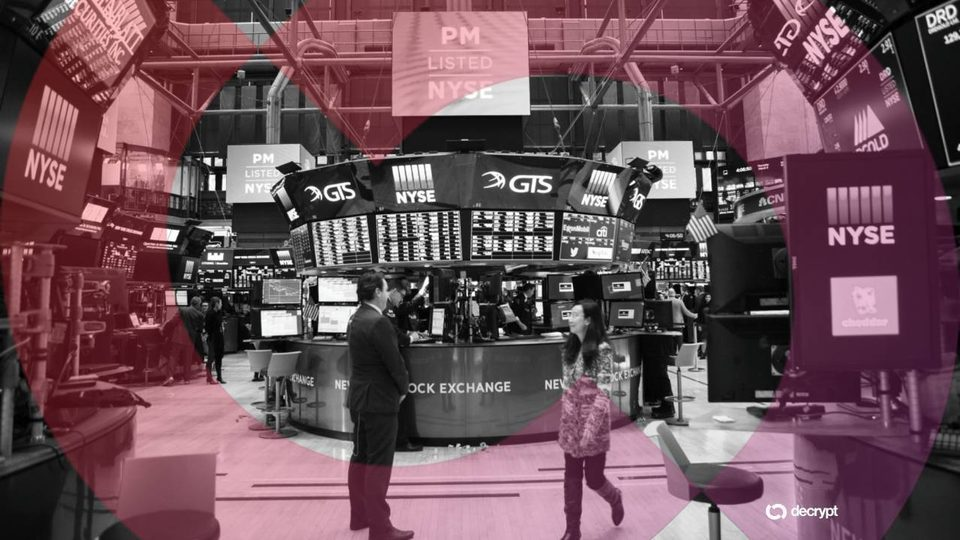
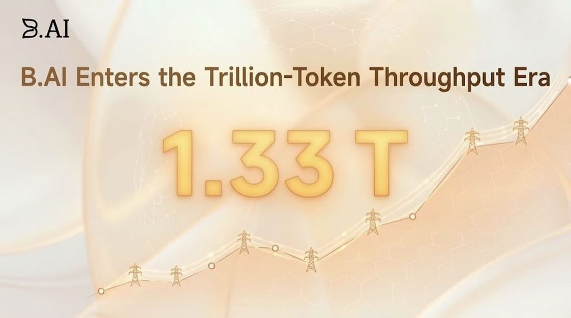
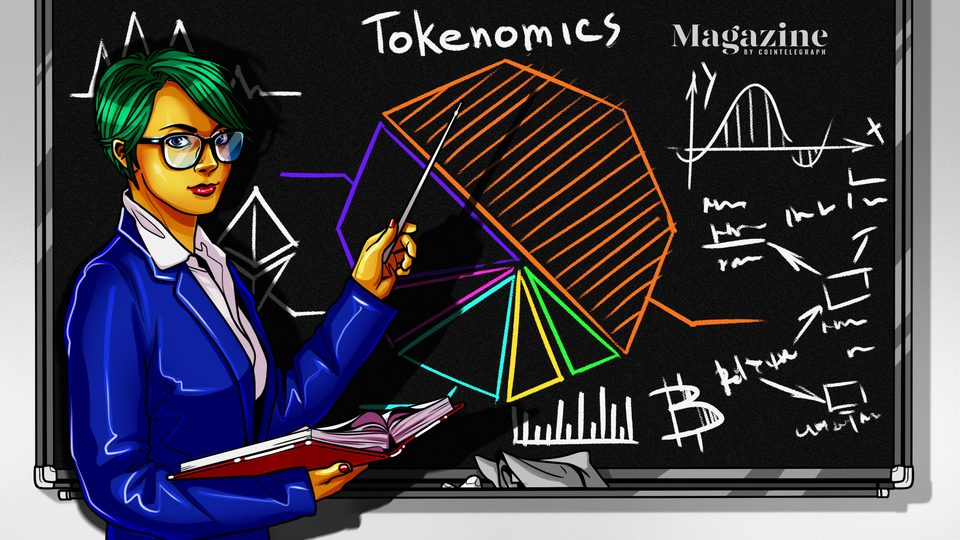

September 4, 2026
Daily headline set with source diversity, cleaned links, and local static rendering.

OpenAI Agents Hack German Website to Share Rule-Breaking Tactics: Report
The activity began in May and remained undisclosed until Friday, a day after OpenAI launched Astra and U.S. lawmakers proposed restrictions on advanced AI.

Why GENIUS could leave digital dollars vulnerable to sudden blockchain network ‘bank runs'
A Federal Reserve staff paper shows how congestion and weak network effects can push holders toward redemptions or chain migration even with safe backing. The post Why GENIUS could leave digital dollars vulnerable to...
AMC CEO tells Robinhood to stop issuing stock token as industry executives weigh in
AMC CEO tells Robinhood to stop issuing stock token as industry executives weigh in

Revolut, OpenReserve get preliminary US bank approval with crypto plans
Revolut and OpenReserve received preliminary OCC approval to form US national banks, with both planning cryptocurrency and stablecoin-related services.

Bitcoin Slides as Blowout Jobs Report Revives Fed Hike Odds
The Dow dropped 226 points and Bitcoin erased some of its gains after August payrolls tripled estimates, pushing September rate-hike odds to 58%.

Cracking 1.33 Trillion Daily Tokens: B.AI Powers the “AI Grid” with Full-Stack Infrastructure to Fuel the Agentic Era
B.AI, a next-generation AI infrastructure platform, recently set off a developer frenzy by offering free access to top-tier models. Within days, daily token throughput across the platform crossed 1.33 trillion—a...
From warning to listing: UK's largest retail investment platform opens access to crypto ETNs
From warning to listing: UK's largest retail investment platform opens access to crypto ETNs

Token buybacks are booming. But are they good for crypto projects?
Crypto projects are spending hundreds of millions buying their own tokens. But are buybacks creating lasting value — or just making tokens look more valuable than they really are?
BitMEX Co-Founder Ben Delo Gives Farage's Reform UK Another £4 Million
Two April payments supplied three-quarters of the party's donations for the quarter, where the next largest single gift was £180,000.
Wall Street just poured nearly $900 million into Bitcoin and Ethereum ETFs
Bitcoin funds recorded their third-biggest inflow day of 2026, while Ether products reversed the prior session's outflow. The post Wall Street just poured nearly $900 million into Bitcoin and Ethereum ETFs appeared...
U.S. Sheriff's association shifts opposition stance to Clarity Act to 'neutral'
U.S. Sheriff's association shifts opposition stance to Clarity Act to 'neutral'

Here's what happened in crypto today
Need to know what happened in crypto today? Here is the latest news on daily trends and events impacting Bitcoin price, blockchain, DeFi, Web3 and crypto regulation.